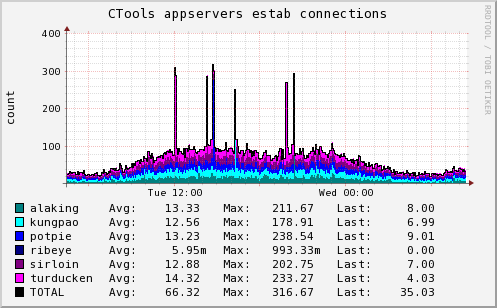
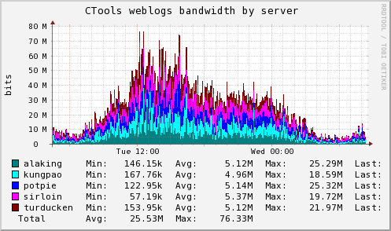
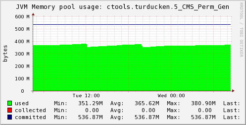
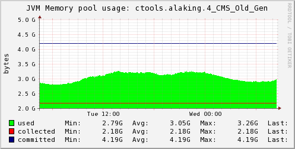

| [Login] |
CTools appservers |
[Home]
[RCS
Log] 2010-04-28 08:26:13 Refreshing in 28m 56s |
[Past 28 Hours] [Past Week] [Past Month] [Past Quarter] [Past Year] [Past 2 Years]
|  |  |
| |
| |
|  | |
| |
|  | |
| |
| |
| |
| |
means
there is no info to draw a graph for the selected time-period